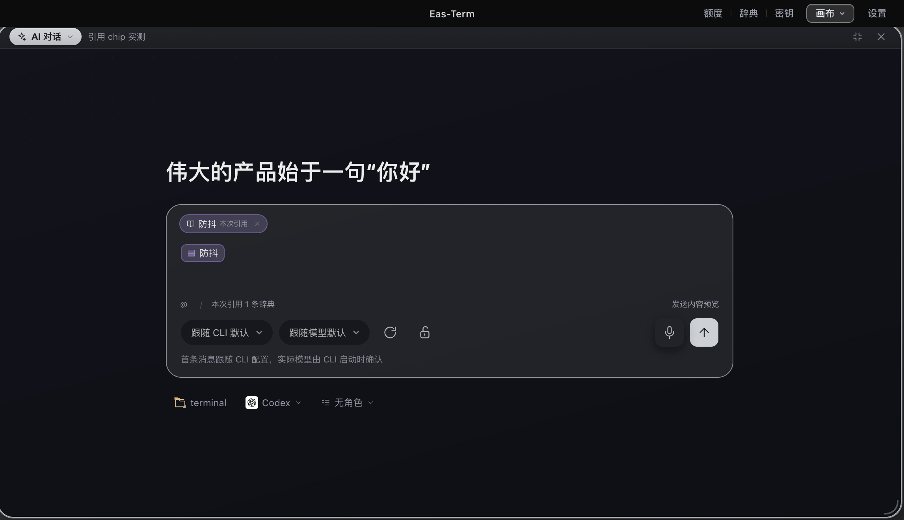
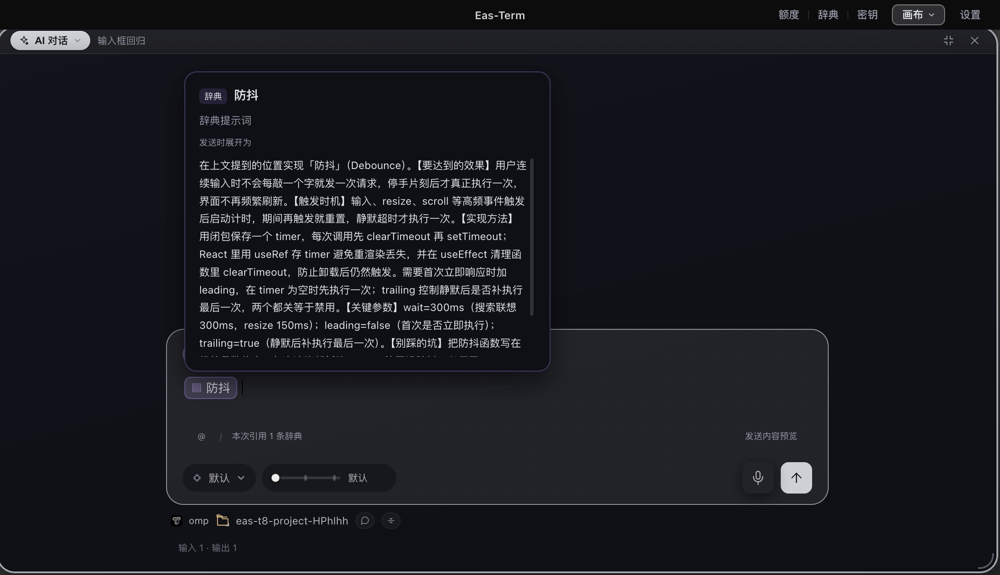
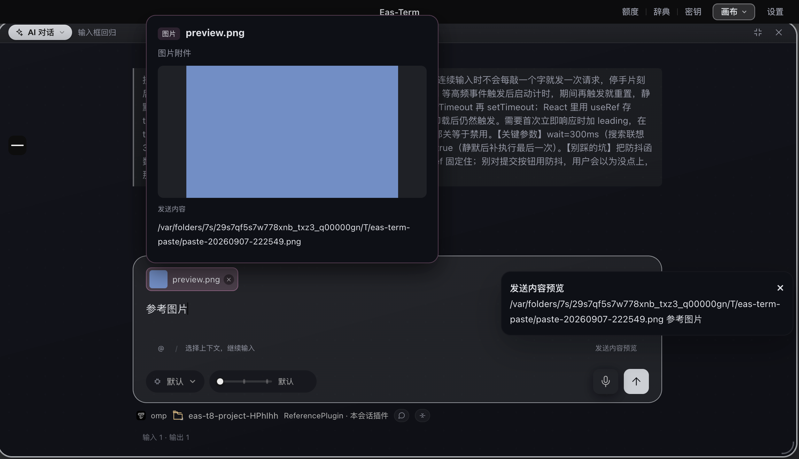

EAS-TERM · 2026-09-07
引用成为可预览的彩色 chip
启动页与对话页共用，覆盖 Codex / Claude / omp。启动屏候选区域增加上 12px、左右 16px 内边距。
160三端交互检查通过
2,537全量检查通过 · 1 跳过
0测试失败
根据类型查看发送内容
| 引用类型 | 悬停预览 |
|---|
| 辞典 | 完整展开提示词 |
| 文件 / 目录 / 技能 / 网页 | 名称、说明与实际引用文本 |
| 插件 | 插件描述、发送文本和会话绑定说明 |
| 图片 | 原图与实际发送的路径或文件引用 |
启动屏实际构建

正文辞典预览

图片预览

验证范围
覆盖整体删除、撤销、光标插入、快速发送、失败恢复、中文输入法、长文、复制粘贴、压缩确认及浅深主题。专项故障回归另通过 39 项。测试使用真实 Electron 与本地数据 API，模型发送和插件候选使用隔离夹具，未调用真实模型。
底层仍保存纯文本。视觉 chip 不改变发送协议，不新增依赖、IPC 或网络调用。
完整说明 · 160 项记录 · 专项记录